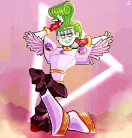

Hello! I am making a website based on one of the my favorite character, his name is...Veneer! yes! I am talking about the silly Mount Ragon himself. The silly man who went to jail, The silly man who was very popular and made very good songs, and the silly dude who has a sister. Anyways, I am going to be talking about him in this website and like why Veneer was the good character but also the villin character. Thank you so anyways, enjoy!
Good question! Veneer is in jail (alone with his siter) due to fraud because they captured a troll (originally from the band BroZone but then the band broke up) and because this troll was what I like to call a singing troll Veneer and his sister was using that troll for fame. So basically, Velvet and Veneer did not actually practice, I mean, Veneer did bring it up once but his sister did not wanna work for it so they kept using the troll for fame and talent. They did eventually get caught and Veneer does have something to do with it. Veneer I guess thought it was the right thing to do to tell the whole mount ragous world that they were torching trolls and using them for their singing power. So that's why they went to jail.
So, one of the songs they did write and one of them are other people's songs like the song Mount Ragous, Mount Ragous is a song mixed with Sweet dreams by Eurythmics, Fame by Irene Cara, and Watch me work. Watch me work is one of the songs they made, its no mix of anything really. But In my opion, the songs are really good. The songs Mount Ragous and Watch me work were part of the reason why Veneer and his sister got so famous.
Yes! he has a sister! more specific a twin sister. Veneer's Sister name is Velvet. Velvet can be bratty and mean to Veneer a lot of the times. (if you watch the show you will know what I mean) but sometimes she is nice to Veneer (which a lot of people can't see that) Velvet is the one that wanted to be famous and kind of started the whole thing with her and Veneer being frauds. She wanted to be famous since her and Veneer was poor but not anymore. Velvet to be honest only liked fame and only wanted fame.In the movie, Velvet risked her life just for fame. (like I said eariler if hyou want to know how she almost died from fame then watch the movie, I like giving spoilers just not to many spoilers) but all I will say is that during one of the concerts Velvet drops something or more like someone or some troll and the stage they are on is very tall and thats all I will say about at. Velvet is also one year older then Veneer, she is a teenager and can drive so just like Veneer, I guess that Velvet is about 18 years old since Velvet is one year older than Veneer and they can drive but yeah that's my guess, it sounds right too.
Even though Veneer seems like a "good" guy that was manipulated pretty easily he is still the villain. A lot of people could not or did not see that but he is still the villain and it's the same with Velvet and VELVET IS THE VILLAIN JUST NOT ALL THE TIME. For example, Veneer did use one of the trolls talent even though it was only once he still used his talent so it is reasonable that Veneer is charged for fraud also that proves that Veneer wanted to do this with Velvet so Veneer was not forced to, he had a choice and wanted to do it. Another example would be Velvet, yes she was the main villain but she was nice at times too, she said that her and Veneer were a team, she felt bad for Veneer when he was stessing out, and more. Veneer is the villin along with Velvet so for people who did think that Veneer was not a bad character don't worry! and probably for a lot of people that was or is in the trolls fandom and loves or loved Veneer will get that they did at one point feel like that and probably the same with Velvet too.
"Why did you put Floyd in this website?" you may ask "I thought this website was supposed to be about Velvet and Veneer!" well what if I told you, Floyd does have something to do with Velvet and Venner? gasp! surprised right? well yes he does have something to do with Velvet and Veneer. So a little bit pf spoilers! Floyd is the one I have been referring as "troll" but his actual name is Floyd. Floyd is the one that got captured by Velvet and Veneer for fame, money, and ect... Floyd was apart of BroZone but then the band broke up. Floyd got captured and his brothers had to save him which is what the movie is about. Floyd did almost die to Velvet and Veneer taking too much for Floyd's talent which I don't think that can actually happen but who am I to judge.Floyd's death is that this has been happening for 3 days or less. It sounds like Velvet and Veneer captured him but I don't know if Velvet captured him alone or Veneer or both of them at once? I still don't know that part....but he almost died because Floyd got captured, and it was mostly Velvet who was using his talent for fame, money, and according to Veneer "and things I bought" or things that they bought. Then, on the third day it was a rule or something that "the one thing that can shadder diamonds is the perfect family harmony" but the only people who could do that was branch and his brothers (also known as BroZone) back together and save Floyd. During this "perfect family harmony", it broke the diamond, (because the cell they kept Floyd was in a diamond pirson) but it was kind of too late for floyd, since Floyd after that kind of, went to sleep. Then he woke up so everything turned out ok.
(Also, just a heads up most of these are opions) So the same with Velvet I am guessing for Veneer too. So can can drive as well but is younger the Velvet by one year but can drive. So I am guessing (if it was not obvisous already) that Veneer is 17 since it says he is a teenager, younger then Velvet from one year, and can drive. Also! this is a theory I am not sure if this is real, but we only see Veneer using Floyd talent once but he sings really good. My theory is that maybe Veneer was practicing without Velvet knowing but is lying and saying that he is using Floyd's talent. Also, there is going to be a trolls four but! there were people questioning if Velvet and Veneer were going to be in it. Some people says yes there is a chance and agree with since Floyd's hair is still a little white which is because of Velvet and Veneer taking Floyd's talebt but we might learn more about that in the fourth movie. But however, there are some people saying no they are not going to be in the next movie which I also agree with, because lets be honest here, they never said Velvet and Veneer were going to be in the next movie that's why I have my hopes down, but at the same time they never said Velvet and Veneer were not going to be in the next movie so that's good at least. But I do really hope and to be honest I do pray that Velvet and Veneer are in the next trolls movie because I am saying this now, if they are not in the next movie, that's going to be sad for me and people that love Velvet and Veneer as much as I do. But at the same time, they kind of have to add Velvet and Veneer in the next movie because think about it, Velvet and Veneer are the characters who got trolls to where they were before and even now there are people that love trolls because of Velvet and Veneer still to this day in 2024.